← 返回首页
VLA / 策略架构 · 6
3.98 VLA / 策略架构 π系列 VLA 2610.36765
该工作针对 MetaFine 五项精细操作任务分别全参数微调 π0.5，采用 OpenPI 的流匹配行为克隆目标，并通过逐指令评测定位抓取、推动和插入失败，再针对性修改示范动作、加入策略所到失败状态的专家续接与恢复轨迹，同时保留常规示范。模型每次生成 50 个动作并按任务执行前 10、20 或 30 个动作后重规划；最终 MAI 以 96.66 分获竞赛第一，领先第二名 94.71 分，其中感知、理解和行为得分分别为 95.47、97.25 和 97.25。
3.81 VLA / 策略架构 π系列 VLA 2610.37170
该研究在低成本 SO-101 机械臂的单一抓取放置任务上，用12、25、50、100和200条嵌套遥操作示范训练并比较ACT、Diffusion Policy、SmolVLA与π₀.₅，共评测1,340个真实机器人回合。π₀.₅动作专家微调在少数据时最佳，12条和25条示范分别成功16/40和28/40，之后维持约70%；ACT则从12条时的1/40升至100条时的37/40，并在100条以上领先。SmolVLA和Diffusion Policy峰值约50%，且存在明显不启动问题；π₀.₅的微调方式比数据量更关键，LoRA仅成功4/110，而动作专家微调成功130/200。
📐 查看论文原版模型结构图与讲解（Figure 1） 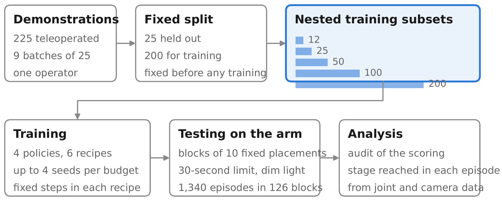
训练预算（Budget）分组 ：Figure 1 展示的是实验 Study design，而非含编码器、隐变量或动作头的网络结构。模型首先按数据预算 $B$ 分组；同一预算下允许使用的示范数量固定，以隔离模型设计与数据规模的影响。示范数据（Demonstrations）输入 ：对每个预算 $B$，所有候选模型共享完全相同的示范集合 $\mathcal{D}_B=\{\tau_i\}_{i=1}^{B}$，其中轨迹 $\tau_i$ 可概括为观测—动作序列 $\{(o_t,a_t)\}_{t=1}^{T_i}$；图中数据流由该公共训练集指向不同模型。模型训练（Model training） ：各方法分别在同一 $\mathcal{D}_B$ 上学习策略 $\pi_\theta(a_t\mid o_t)$，得到待比较的模型 $\{\pi_{\theta_m}^{(B)}\}_m$。这种控制变量设计确保性能差异主要来自模型或学习机制，而非训练示范不一致。十种放置测试（Ten placements） ：训练后的每个模型均进入同一组十个初始放置条件 $\mathcal{P}=\{p_j\}_{j=1}^{10}$，逐一执行并统计任务表现；共享测试条件使跨模型、跨预算结果具有可比性，并用于衡量对物体位置变化的泛化能力。进入深读卡片查看完整方法与千问问答 →
3.79 VLA / 策略架构 π系列 VLA 2610.37215
R2A是一种无需微调基础策略的测试时扩展框架：它将成功训练示范构造成纯运动学的时空运动基元图，以扩散模型校正分布外初始状态，再通过查询条件GNN定位当前执行进度并检索后续运动基元，最后用逐维动态门控与冻结VLA的动作预测融合。该方法在GR00T N1.7、π0.5和StableVLA上进行评测，在LIBERO-Plus等仿真基准中带来最高12个百分点的成功率提升；在RoboTwin2.0-Plus上将π0.5的成功率从56.8%提高到66.2%，真实Aloha任务中最高提升40个百分点。
📐 查看论文原版模型结构图与讲解（Figure 1） 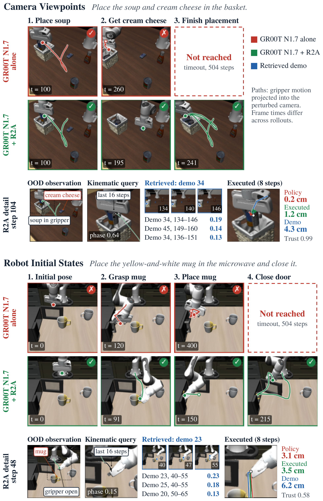
图示组织/时序流 ：Figure 1 并非网络层级图，而是从左到右展开的 Level-5 LIBERO-Long 闭环轨迹；上、下两块分别施加 Camera Viewpoints 与 Robot Initial States 分布外扰动。每块前两行对比冻结策略 GR00T N1.7（$\pi$）与接入 Retrieve to Act（R2A），第三行放大一次检索修正。Camera Viewpoints ：仅用 $\pi$ 时，放下汤罐后仍持续推挤，未返回抓取奶油奶酪；R2A 在第104步从历史图 $\mathcal G=(\mathcal V,\mathcal E)$ 检索几何相关运动片段，使末端释放并上抬，实际位移 $1.2\,\mathrm{cm}$，而策略原指令仅为 $0.2\,\mathrm{cm}$，最终于第242步完成。Robot Initial States ：初始关节状态 $\mathbf q_0^{\rm OOD}$ 偏移时，原策略空爪直接驶向微波炉；R2A 先经 $\mathbf q_0^{\rm rect}=\mathrm{Rectify}(\mathbf q_0^{\rm OOD},\mathcal M_\phi)$ 恢复起始姿态，再于第48步检索开放夹爪向下接近杯子的片段，并于第225步完成。动作融合/输出 ：R2A 不改动视觉语言策略，而以当前末端位姿 $\mathbf x_t=\mathrm{FK}(\mathbf q_t)$、夹爪状态 $\gamma_t$ 和历史运动基元校正空间动作块 $\mathbf A_t^{\pi,\rm pose}\in\mathbb R^{C\times6}$，同时保留离散夹爪指令 $\mathbf A_t^{\pi,\rm grip}\in\mathbb R^{C\times1}$，形成可执行恢复轨迹。进入深读卡片查看完整方法与千问问答 →
3.00 VLA / 策略架构 π系列 VLA 2610.37381
PDRVLA引入轻量级物理动力学模块，从中间层视觉语言特征中提取物理token，并通过预测未来RGB、深度和光流特征及冻结视频世界模型的辅助监督来学习动力学表示；部署时无需在线生成视频。其训练数据全部来自公开数据集，并加入人到机器人数据合成、子任务标注和具身思维链标注；在LIBERO、LIBERO-Plus、RoboTwin 2.0和SimplerEnv上的成功率分别达到99.3%、89.9%、93.6%和81.5%。
📐 查看论文原版模型结构图与讲解（Figure 1） 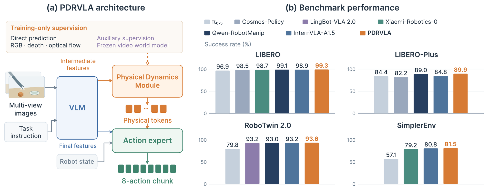
信息完整性 ：现有材料仅包含题注“PDRVLA overview”，未提供 Figure 1 原图、图中模块标签及方法章节正文，因此无法确认简化架构中的数据流、输入输出张量或阶段划分；若直接补写视觉编码器、策略头或动作变量将属于无依据推断。架构面板（a） ：题注只能确定该面板展示 PDRVLA 的“Simplified architecture（简化架构）”，但无法据此准确给出具体英文模块名、特征表示及核心数学符号，也不能判断其是否采用 VLM、扩散策略、并行解码或分阶段训练。性能面板（b） ：该面板比较四个仿真基准上的成功率，但题注未列出基准名称、对比方法、数值及统计方式，因而不能可靠解释柱状结果或建立其与架构组件的对应关系。请补充 Figure 1 图片或方法章节后再生成符合要求的逐模块详解。进入深读卡片查看完整方法与千问问答 →
2.98 VLA / 策略架构 π系列 VLA 2610.37378
VLA-Stem是一种基于强化学习的轻量级推理时安全机制：它冻结底层VLA，将其动作块转换为短时域运动参考，并结合机器人本体状态与局部障碍物信息，通过轨迹级引导灵活调整运动和时序。该方法采用教师—学生蒸馏与课程学习，从参考轨迹跟随逐步训练到静态和动态避障，无需真实世界训练或微调即可进行仿真到现实迁移。在6个受约束仿真设置中，其平均无碰撞任务成功率为52.8%，显著高于最强安全基线的23.7%，同时保持无障碍场景中的基础策略性能；真实机器人实验也显示静态和动态障碍下的碰撞持续减少。
📐 查看论文原版模型结构图与讲解（Figure 1） 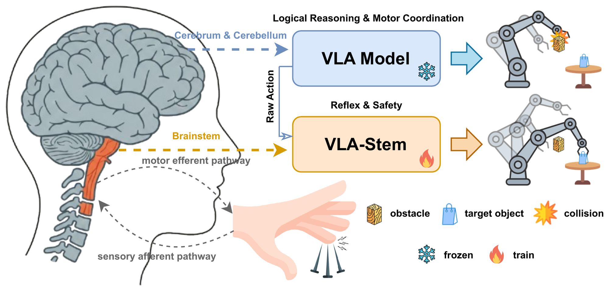
高层任务控制（Higher-level motor control） ：左侧以生物运动控制作类比；冻结的基础 VLA 根据视觉—语言任务生成短时域运动参考轨迹 $\tau_t^{\mathrm{VLA}}=\{\hat a_t,\ldots,\hat a_{t+H-1}\}$，提供目标导向的运动意图，而非直接负责局部避障。低层感觉运动调节（Stem policy） ：对应脑干式快速调节。策略以 $\tau_t^{\mathrm{VLA}}$、机器人本体状态 $s_t^{\mathrm{prop}}$ 和障碍物观测 $o_t^{\mathrm{obs}}$ 为条件，输出修正动作 $a_t\sim\pi_{\mathrm{Stem}}(\cdot\mid\tau_t^{\mathrm{VLA}},s_t^{\mathrm{prop}},o_t^{\mathrm{obs}})$，在保留任务意图的同时响应即时物理风险。轨迹引导与教师训练（Trajectory Guidance / Teacher） ：轨迹级约束保持参考运动的空间方向，但允许执行路径与时序灵活变化。教师额外接收目标物体的特权任务信息 $g_t^{\mathrm{priv}}$，并通过课程学习依次完成参考跟随、静态避障和动态避障，难度逐步提升。蒸馏部署与绕障执行（Student / Deployment） ：教师将恢复偏差和避障能力蒸馏至学生策略，部署时移除 $g_t^{\mathrm{priv}}$。右侧展示修正后的动作使机械臂绕开障碍物，同时继续趋近目标物体，实现“VLA 指引方向、Stem 在线安全调节”。进入深读卡片查看完整方法与千问问答 →
2.80 VLA / 策略架构 π系列 VLA 2610.36285
ASPEN为冻结的导航VLA引入事件触发式调度器，通过融合时序视觉、语言指令、执行历史和缓存置信度来预测上一条命令是否会持续，并据此复用命令或重新调用NaVILA。在1,223个跨数据集RxR-CE val-unseen回合上，它将每回合VLA调用从75.9次降至68.7次（减少9.5%），估算推理时间从41.5秒降至38.2秒（减少8.1%，含调度开销）。其成功率为53.1%，与基线53.0%相当，且92.1%的回合完整动作序列与基线完全一致；这些时间结果是固定单元成本下的估算，并非端到端实测。
📐 查看论文原版模型结构图与讲解（Figure 1） 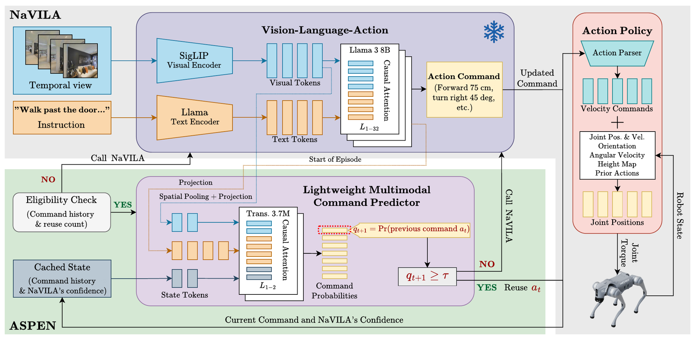
输入与冻结式导航 VLA（Frozen Navigation VLA） ：在时刻 $t$，模型接收当前视觉观测 $o_t$ 与语言导航指令 $l$；VLA 参数保持冻结，仅在需要更新时执行推理，输出新的动作命令（或动作块）$\hat a_t=\pi_{\mathrm{VLA}}(o_t,l)$，避免为调度机制反向修改基础策略。复用资格检查（Eligibility Check） ：系统先检查上一条命令 $a_{t-1}$ 是否仍具备复用资格，例如其是否存在、尚未耗尽且满足执行约束；以二值门控 $e_t\in\{0,1\}$ 表示。若 $e_t=0$，则跳过持久性判定，直接触发一次新的 VLA 推理。持久性评分（Learned Persistence Score） ：当 $e_t=1$ 时，ASPEN 根据当前观测、指令及历史命令特征预测持久性分数 $p_t\in[0,1]$。该分数衡量旧命令在新状态下继续有效的可能性，并通过阈值 $\tau$ 形成调度决策 $g_t=\mathbb{I}[p_t\ge\tau]$。命令调度与执行（Command Scheduling） ：若 $g_t=1$，输出复用命令 $a_t=a_{t-1}$；否则调用冻结 VLA 生成 $a_t=\pi_{\mathrm{VLA}}(o_t,l)$。执行后的新观测反馈至下一时刻，从而形成“资格检查—评分—复用/刷新—环境反馈”的闭环。进入深读卡片查看完整方法与千问问答 →
世界模型 / WAM · 1
2.99 世界模型 / WAM π系列 世界模型 2610.37666
ThinkWorld 是一种结合 VLA 与世界想象的两阶段学习框架：先用带动作标注的人类与机器人示范监督训练 Chain-of-Dynamics（CoD）离散运动序列及未来特征预测，再以预测未来和真实未来在冻结 DINO 特征空间中的一致性作为强化学习奖励。它采用 FAST 风格运动分词器统一不同具身的运动表示，使无动作标注视频也能监督动作推理，并在部署时移除未来预测分支。论文报告其在仿真和真实机器人上提升了未见任务、环境及人到机器人技能组合的泛化，但所给节选未包含成功率、提升幅度或数据规模等具体实验数字。
📐 查看论文原版模型结构图与讲解（Figure 6） 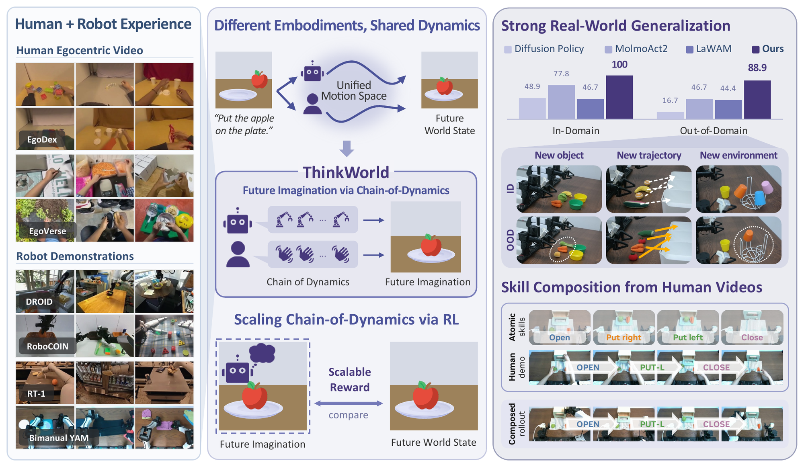
输入与统一表征 ：图中数据流自左向右：语言指令 $l$、当前观测 $o_t$、历史帧 $\mathbf h_t$ 进入 VLM；机器人样本额外输入本体状态 $s_t$，共同形成面向推理与控制的多模态特征。Stage I—Action-Grounded CoD ：将机器人轨迹或人手轨迹片段 $\mathbf m_t$ 归一化为末端执行器增量，再经 FAST-style Motion Tokenizer $\mathcal T(\cdot)$ 得到监督序列 $\mathbf c_t^\star=\mathcal T(\mathbf m_t)$；VLM 自回归生成 Chain-of-Dynamics（CoD）$\mathbf c_t$，以共享离散动作词表连接不同人机具身。未来想象模块 ：Learnable Future Queries 在 CoD 条件下读取视觉特征，预测动作执行后的未来视觉状态；因此 $\mathbf c_t$ 不仅描述“做什么”，还显式建模动作如何展开并改变场景，实现从离散动力学推理到未来表征的闭环。Stage II—World Imagination Reinforcement 与控制输出 ：经过物理时域 $\Delta$ 后，将想象未来与真实观测 $o_{t+\Delta}$ 对齐，并以该一致性作为无需运动标注的强化信号；更新后的共享表征最终结合 $s_t$，预测可执行的连续机器人动作序列 $\mathbf a_t$，支持真实环境泛化及人类视频引导的技能组合。进入深读卡片查看完整方法与千问问答 →
机器人 RL / 后训练 · 3
3.65 机器人 RL / 后训练 π系列 机器人 RL 2610.36694
TOPS面向语言条件多任务机器人操作，在不修改策略网络架构的情况下，为每个任务构建由反向映射专家动作拟合的低秩高斯混合源分布，并依据源—目标协方差失配，在扩张方向采用先慢后快的流插值调度。使用单步积分时，TOPS将LIBERO-10成功率从十步标准流匹配的53.44%提升至69.67%，推理时间降至约六分之一；在真实世界上层抽屉开启任务中，成功率由20%提升至80%。
📐 查看论文原版模型结构图与讲解（Figure 2） 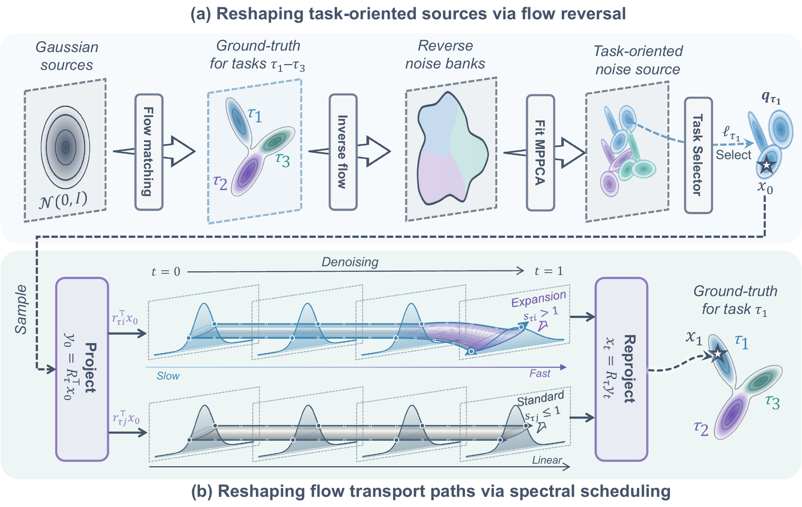
任务源构建（Task-Specific Source Construction） ：离线将各任务专家动作块反向映射，形成样本库 $\mathcal B_\tau$；随后用 $M_\tau$ 分量 MPPCA 拟合多模态源 $q_\tau(\mathbf x_0)=\sum_m\pi_{\tau m}\mathcal N(\boldsymbol\mu_{\tau m},\boldsymbol\Sigma_{\tau m})$，其中 $\boldsymbol\Sigma_{\tau m}=\mathbf U_{\tau m}\boldsymbol\Lambda_{\tau m}\mathbf U_{\tau m}^{\top}+\sigma_{\tau m}^2\mathbf I_D$，显式保留动作时序与维度间相关性。指令选择器（Instruction Selector） ：输入语言指令，经学习式选择器预测任务索引 $\hat\tau$；该索引同时检索对应源分布 $q_{\hat\tau}$、高斯 OT 基及预先构造的插值日程，实现训练时任务标签选择与推理时语言选择的一致接口。OT 特征基与分轴调度 ：将源样本 $\mathbf x_0$ 与专家目标变换到所选任务的 Gaussian OT eigenbasis；依据源—目标协方差失配识别 expansion directions，并在这些特征轴上采用 slow-then-fast interpolation，先抑制过早扩张、后快速对齐；其余轴保持 linear interpolation。动作空间回映射与生成 ：把特征基中的插值状态 $\mathbf x_t$ 及速度监督 $\dot{\mathbf x}_t$ 映回原动作空间，用于训练条件速度场；推理时，schedule-aware solver 按所选日程积分该速度场，最终输出连续动作块。进入深读卡片查看完整方法与千问问答 →
3.01 机器人 RL / 后训练 π系列 机器人 RL 2610.37330
论文提出 M-PACT，将可迁移的运动原语学习与特定机器人形态的动作实现解耦：SkillSeg 依据运动学线索自监督切分三维人手轨迹，EPMT 将片段编码为离散的平移与手部开合 token，以及连续的旋转潜变量，再由轻量级形态专用解码器生成机器人运动。该方法在 EgoDex、HoloAssist 和 HumanoidEveryday 三个数据集上验证了跨数据集与跨形态迁移，并仅用约 100 条机器人示范即可通过解码器适配获得较强的人形机器人运动重建效果。
📐 查看论文原版模型结构图与讲解（Figure 1） 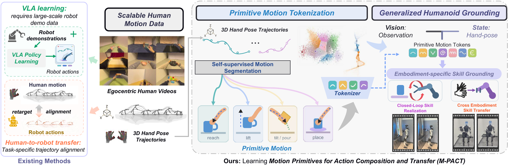
阶段 I—SkillSeg（技能分割） ：输入手部状态轨迹 $\tau=\{(p_t,R_t,\alpha_t)\}_{t=0}^{T-1}$，其中 $p_t\in\mathbb{R}^3$、$R_t\in\mathrm{SO}(3)$、$\alpha_t\in\mathbb{R}$ 分别表示腕部位置、姿态与手部开度；通过自监督重建学习边界，将长轨迹切分为局部运动段。阶段 II—EPMT（具身原语运动标记化） ：各运动段分别送入平移、旋转和开度编码器；平移与开度特征经码本量化为离散 token，旋转保留为连续潜变量，从而形成可跨数据集与具身共享的原语表示。状态条件效果解码器（Effect Decoder） ：将原语表示与段起始状态联合输入解码器，预测该段的位移、旋转及开度变化，并以轨迹重建目标联合训练编码器、码本和解码器，使 token 描述“运动意图”，解码器负责具身相关的执行效果。阶段 III—目标具身迁移与扩展 ：迁移到机器人时冻结 SkillSeg、运动编码器及码本，仅用机器人示范拟合新解码器；CC-EPMT 再由段起点可用上下文预测原语，而 human-to-humanoid grounding 继续训练机器人解码器以实现人类表示到类人机器人运动的映射。进入深读卡片查看完整方法与千问问答 →
2.96 机器人 RL / 后训练 π系列 机器人 RL 2610.36420
SO-101 Bench 是面向低成本 SO-101 机械臂的语言条件空间操作数字孪生基准，包含4类任务、138种家居物体、916个评测回合及 ROBUST、PLAN、MEM 子集；所有学习策略均使用同一批3629条仿真遥操作示范，并在相同的36小时×4张A100预算下微调。仿真与真实机器人对5种零真实数据策略给出完全一致的排名（Spearman ρ=1.00，MMRV=0.000），但仿真成功率高估9至31个百分点；九种VLA/WAM中最佳学习策略约61分且PLAN均不超过17%，而结合PyRUA-Lean与Galaxea 0.5抓取交接的GPT-6.1 Sol智能体取得83.2分和75%的PLAN成功率。
📐 查看论文原版模型结构图与讲解（Figure 1） 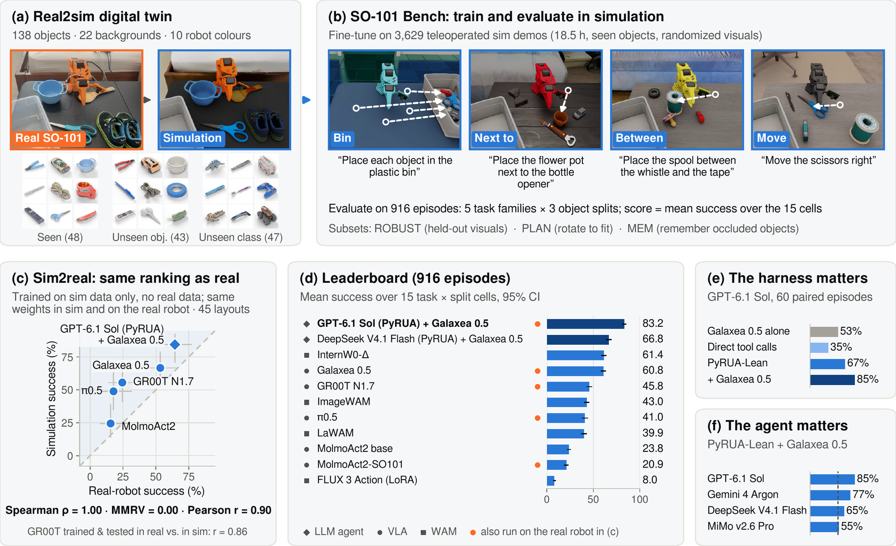
平台与输入（a） ：Real SO-101 与其 digital twin 构成一一对应的真机—仿真平台；策略接收视觉观测与机器人状态 $o_t=(I_t,q_t)$，输出关节动作 $a_t=\pi(o_t)$，以统一本体、相机视角和控制接口约束评测。任务与轨迹（b） ：四项操作任务共享上述观测—动作闭环，形成轨迹 $\tau=\{(o_t,a_t)\}_{t=1}^{T}$；任务成功率作为核心输出，从而在相同 embodiment 与执行协议下比较不同策略。Sim2real 与榜单（c–d） ：五个策略仅使用仿真数据训练，再零样本部署到真实 SO-101；图中比较仿真得分 $S_{\mathrm{sim}}$ 与真机得分 $S_{\mathrm{real}}$，其相对排序保持一致，并汇总为 Leaderboard，说明该数字孪生具备可靠的策略筛选能力。评测因素消融（e–f） ：Harness ablation 分析评测支架/执行配置对成功率的影响；“The language model matters”进一步固定机器人与任务条件，仅改变语言模型组件，比较其指令理解和决策质量，表明最终性能不仅取决于低层控制策略 $\pi$，也受语言推理模块显著影响。进入深读卡片查看完整方法与千问问答 →
导航 / VLN / SLAM · 8
3.99 导航 / VLN / SLAM 导航 SLAM 2610.36312
SG²SLAM面向单目户外导航，将流式空间几何先验与射线条件化3D高斯核结合，以分块级位姿、稠密点图和置信度取代逐帧2D–3D关联，并通过度量深度网络校正尺度。系统联合优化空间几何、相机位姿与3DGS地图，再利用全局Sim(3)位姿图一次性融合所有分块，以抑制尺度漂移和几何退化。在KITTI和Waymo Open数据集上，其前端跟踪与后端建图性能均超过基于逐帧关联的单目户外SLAM基线；节选未披露具体数值指标。
📐 查看论文原版模型结构图与讲解（Figure 1） 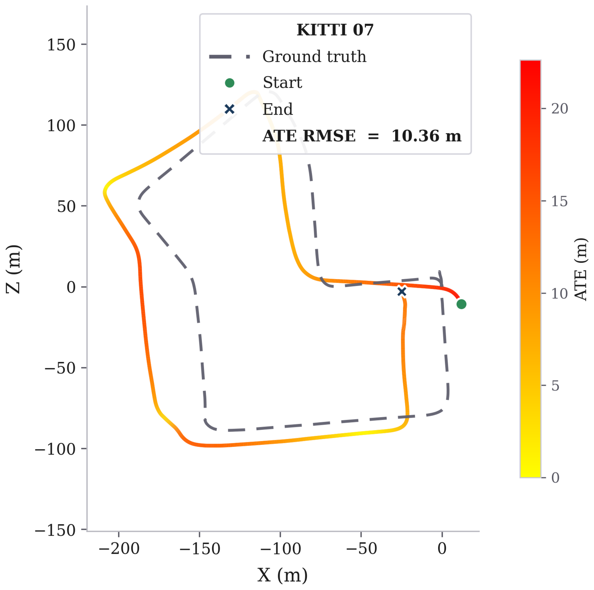
输入与流式空间几何（Streaming Spatial Geometry） ：单目图像 $I_t$ 经感知网络转换为当前帧稠密三维几何 $\mathcal{G}_t=\{(\mathbf{x}_i,\mathbf{f}_i)\}$，以三维坐标与几何特征替代逐帧二维关键点及传统 2D–3D 匹配。联合三维关联（Joint 3D–3D Association） ：将 $\mathcal{G}_t$ 与历史流式几何/高斯地图 $\mathcal{M}_{t-1}$ 直接对齐，通过几何与特征一致性建立 3D–3D 对应，并联合服务于 tracking 和 mapping，避免成对图像匹配。相机跟踪（Tracking） ：依据三维对应估计当前位姿 $\mathbf{T}_t\in\mathrm{SE}(3)$，优化变换后点集 $\mathbf{T}_t\mathbf{x}_i$ 与地图几何之间的残差；所得位姿进一步确定新观测在全局坐标系中的位置。3DGS建图与输出（Mapping） ：利用 $\mathbf{T}_t$ 融合 $\mathcal{G}_t$，增量更新高斯基元 $\mathcal{M}_t=\{(\boldsymbol{\mu},\boldsymbol{\Sigma},\alpha,\mathbf{c})\}$，并通过可微高斯渲染生成新视角图像，最终输出连续相机轨迹与全局 3DGS 地图。进入深读卡片查看完整方法与千问问答 →
3.99 导航 / VLN / SLAM 导航 目标导航 2610.36968
Omni-IGN是一套面向无人机的全机载全向图像目标导航系统，利用四目鱼眼RGB相机、跨视角自注意力强化学习策略和GRU，在未知环境中输出连续速度指令。系统还从相邻鱼眼视图估计立体深度，并通过碰撞感知安全层修正危险动作，无需专用深度传感器；任务成功标准为距目标视点小于1米。该方法在Habitat基准上取得连续动作基线中的最佳性能，IsaacSim测试验证了避障能力，真实飞行则实现了无需微调和外部定位的零样本仿真到现实迁移。
📐 查看论文原版模型结构图与讲解（Figure 1） 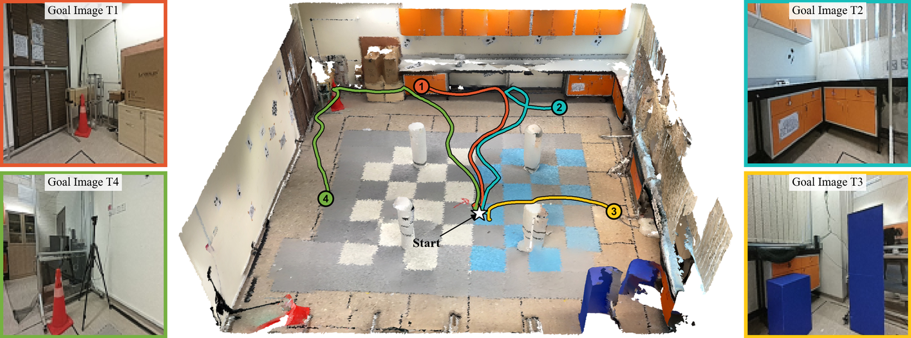
多传感器输入与预处理 ：无人机搭载 Jetson Orin NX 16G、OAK-4P-New 四鱼眼相机阵列及 Livox Mid-360s LiDAR。四路鱼眼图像经畸变校正，形成同步观测 $\mathbf I_t=\{I_t^{(i)}\}_{i=1}^{4}$，作为视觉导航前端输入。强化学习导航策略 ：全部四路校正图像送入 RL navigation policy，通过多视角环境表征预测机体速度指令 $\mathbf u_t^{\mathrm{RL}}=[v_x,v_y,v_z,\omega]^\top$，实现由视觉观测到飞行动作的端到端映射 $\mathbf u_t^{\mathrm{RL}}=\pi_\theta(\mathbf I_t)$。双目深度与安全避障 ：前相机分别与左、右相邻相机的重叠视野构成立体匹配对，由视差 $d_t$ 估计深度 $D_t=fb/d_t$。深度障碍信息进入 safety layer，对策略输出进行约束或修正，得到安全指令 $\mathbf u_t^{\mathrm{safe}}$，再发送至飞控。LiDAR闭环状态反馈 ：Mid-360s LiDAR独立提供位置、姿态及速度等状态估计 $\hat{\mathbf x}_t$；飞控结合 $\hat{\mathbf x}_t$ 与 $\mathbf u_t^{\mathrm{safe}}$ 执行闭环控制，使感知、决策、安全过滤和机体响应形成完整数据流。进入深读卡片查看完整方法与千问问答 →
3.98 导航 / VLN / SLAM 导航 SLAM 2610.36853
LingGS提出一种无需额外训练的单目高斯SLAM系统，将前馈几何预测与相机跟踪解耦：冻结的流式基础模型LingBot-Map提供相机内参与一致深度，显式几何求解器结合ORB特征、预测深度和重投影误差估计位姿，高斯映射器则通过关键帧选择、拉普拉斯引导插入及RGB/深度联合优化构建场景。系统在单张RTX 4090上约以7 FPS运行，跨室内外数据集将渲染PSNR最高提升3.1 dB，并将流式模型原生相机头的轨迹误差最高降低约97%，同时取得最低深度误差和有竞争力的跟踪误差。
📐 查看论文原版模型结构图与讲解（Figure 1） 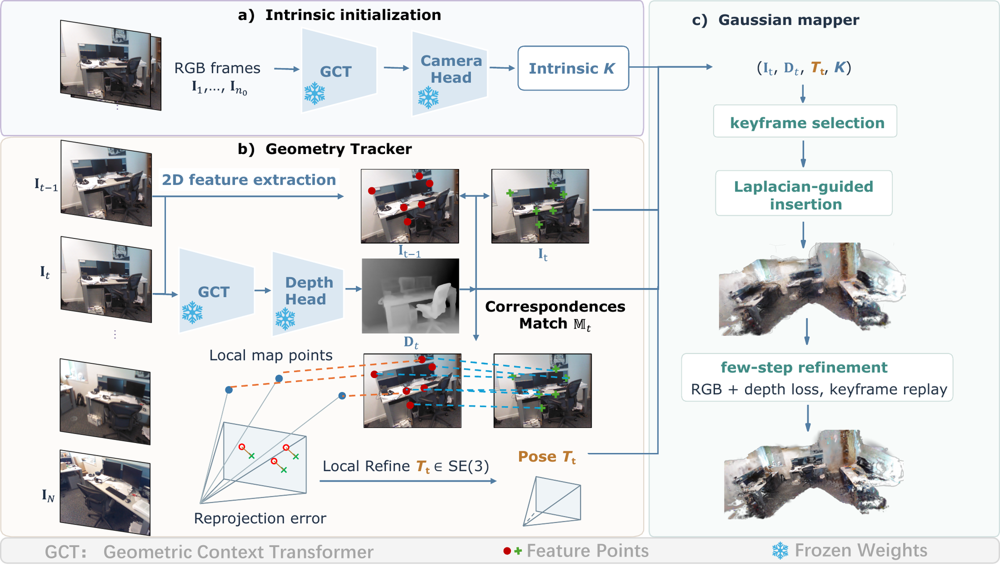
阶段(a) 流式几何先验 ：单目序列 $\{\mathbf I_t\}_{t=1}^{N}$ 输入冻结的 Streaming Foundation Model（LingBot-Map）；初始若干 RGB 帧估计并固定相机内参 $\mathbf K$，随后逐帧预测深度 $\mathbf D_t$ 与图像特征，将深度作为虚拟 RGB-D 传感器。阶段(b) 几何相机跟踪 ：Geometry Solver 基于 ORB-SLAM3，将当前帧特征与历史稀疏地图进行 correspondence matching，并结合 $\mathbf D_t$ 建立 2D–3D 约束；通过最小化投影函数 $\pi(\mathbf K\mathbf T_t\mathbf x^{\mathrm w})$ 与观测像素间的重投影误差，求得世界到相机位姿 $\mathbf T_t\in SE(3)$。阶段(c) 高斯增量建图 ：Gaussian Mapper 接收 $(\mathbf I_t,\mathbf D_t,\mathbf T_t,\mathbf K)$，先执行 keyframe selection，再依据图像 Laplacian 响应定位高频细节与欠建模区域，进行 Laplacian-guided Gaussian insertion，将新高斯增量融合至显式场景表示。联合细化与输出 ：每次更新执行 30-step refinement，并通过 keyframe replay 混合当前帧与历史关键帧；联合优化渲染 RGB/深度与观测 $\mathbf I_t,\mathbf D_t$ 的损失，持续校正高斯的位置、尺度、颜色及不透明度，输出可实时渲染的 Gaussian Splatting 地图。进入深读卡片查看完整方法与千问问答 →
3.98 导航 / VLN / SLAM 导航 SLAM 2610.37111
RAVEN 是面向立体视觉-惯性四旋翼的统一主动 SLAM 框架，在目标识别、效用评估和轨迹执行全流程中显式考虑定位不确定性。该方法联合生成覆盖前沿与主动回环候选的全局巡游路线，以效用向量分别衡量预期探索时长和位姿图信息，并通过区间 [0,1] 的用户优先级参数权衡探索效率与定位精度；同时构建在线 Fisher 信息场，实现特定相机位姿视觉定位信息的常数时间查询，并生成最小化视觉状态估计误差的感知感知轨迹。基准实验表明其在探索效率与定位精度的平衡上优于多种先进主动 SLAM/探索方法，且在全机载真实四旋翼的挑战环境实验中得到验证；节选未提供具体数值指标。
📐 查看论文原版模型结构图与讲解（Figure 19） 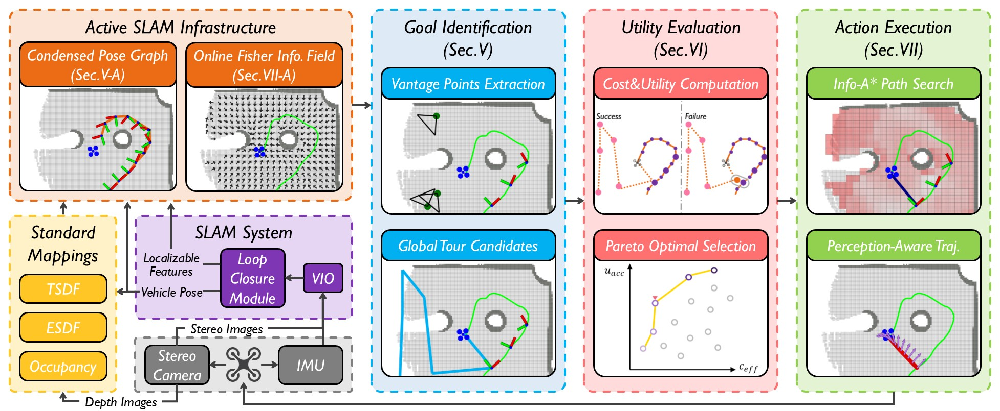
状态估计与体素建图 ：机载传感器观测 $z_t$ 输入定位与标准 volumetric maps 模块，递推更新载体位姿 $\mathbf{x}_t\in SE(3)$、轨迹 $\mathbf{X}_{0:t}$ 及占据/几何体素地图 $\mathcal{M}_t$，形成后续规划所需的最新环境状态。增量规划表征 ：由 $\mathbf{X}_{0:t}$、$\mathcal{M}_t$ 在线构建 Online Fisher Information Field（OFIF）$\mathcal{I}_t(\mathbf{p})$，编码候选位置的观测信息强度；同时将完整位姿图压缩为 Condensed Pose Graph（CPG）$\mathcal{G}_t^c=(\mathcal{V},\mathcal{E})$，保留关键位姿及约束，降低实时查询与优化开销。目标识别与效用评估 ：Goal Identification 从未探索边界生成候选目标集合 $\mathcal{C}_t$；Utility Evaluation 联合 OFIF 的信息收益、CPG 的定位可观测性及路径代价，对候选轨迹 $\tau$ 计算效用 $U(\tau)=G_{\mathrm{info}}(\tau)+G_{\mathrm{loc}}(\tau)-\lambda C(\tau)$，并选取 $\tau^\star=\arg\max_\tau U(\tau)$。动作执行与闭环重规划 ：Action Execution 将 $\tau^\star$ 转换为控制序列 $\mathbf{u}_{t:t+H}$ 驱动车辆探索；新观测持续回流并更新位姿、体素地图、OFIF 与 CPG，随后重复“目标识别—效用评估—执行”，直至满足探索终止条件。进入深读卡片查看完整方法与千问问答 →
3.97 导航 / VLN / SLAM 导航 SLAM 2610.36876
HoloRecon面向长程全景增量三维重建：在全局一致坐标系下增量融合观测，强调远距离全景覆盖与漂移控制，服务于大范围场景重建与导航定位。
📐 查看论文原版模型结构图与讲解（Figure 1） 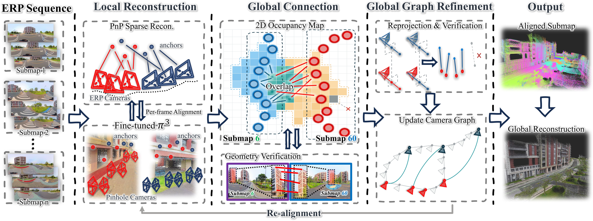
稀疏地标深度标定（Sparse Landmarks Calibration） ：输入关键帧图像 $I_t$、Pi3 预测深度 $D_t^{\mathrm{Pi3}}$ 与稀疏地图点观测 $z_{tj}$，利用对应像素处的几何深度拟合尺度/偏移 $(s_t,b_t)$，得到校准深度 $\hat D_t=s_tD_t^{\mathrm{Pi3}}+b_t$ 及缓存稠密几何。全景相机地图注册（Panoramic Camera Registration） ：依据已注册位姿 $T_t\in\mathrm{SE}(3)$，将反投影点 $\mathbf X_{t}(u)=T_t\pi^{-1}(u,\hat D_t(u))$ 放入统一地图坐标系，形成可跨大视角检索的稠密预测。跨视角约束验证（Cross-view ORB Correspondences） ：稠密几何为远距离帧间的 ORB 特征匹配提供重投影先验；通过对应点 $(u_i,u'_i)$ 的几何一致性与重投影误差筛除外点，生成可靠的长程相机约束 $T_{ij}$。全局校正与观测融合（Global Correction & Observation Fusion） ：联合优化相机位姿、稀疏地标及长程约束，并融合重复观测以精化稀疏地图；更新后的地图重新估计 $(s_t,b_t)$，再以校正位姿重定位缓存稠密几何，输出全局一致地图。进入深读卡片查看完整方法与千问问答 →
3.95 导航 / VLN / SLAM 导航 SLAM 2610.36454
SVIn+是多模态水下状态估计框架，融合视觉与惯性等传感以提升水下鲁棒定位与建图，面向浑浊、低纹理等水下挑战。
📐 查看论文原版模型结构图与讲解（Figure 1） 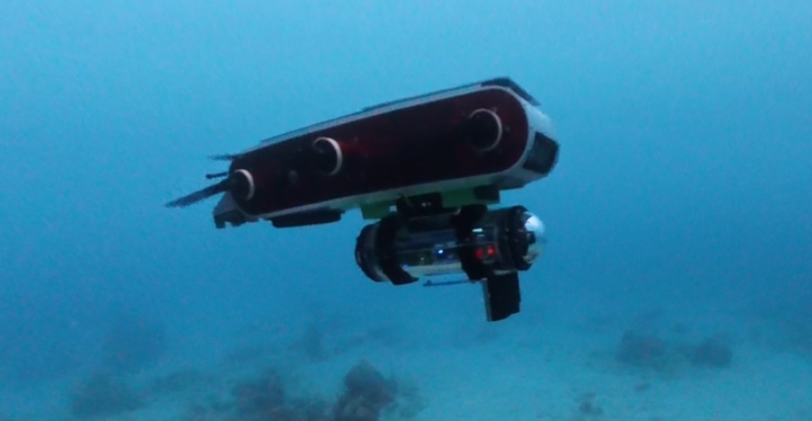
平台与多传感器输入 ：上半部分展示野外部署中的 Aqua2 水下机器人及其多传感器载荷；各传感器在时刻 $t$ 产生同步观测 $z_t=\{z_t^{\mathrm{stereo}},z_t^{\mathrm{sonar}},z_t^{\mathrm{imu}},\ldots\}$，为运动估计与环境重建提供互补信息。SVIn+ 多传感器里程计 ：下半部分以 Folkestone 数据集为例，SVIn+ 融合连续观测，估计机器人位姿 $\mathbf{T}_{WB,t}\in\mathrm{SE}(3)$；绿色坐标姿态及轨迹 $\mathcal{T}=\{\mathbf{T}_{WB,t}\}_{t=0}^{N}$ 表示其随时间推进的六自由度运动结果。双目点云重建 ：双目图像经匹配与三角化生成蓝色点云 $\mathcal{P}^{\mathrm{stereo}}_t=\{\mathbf{p}_i\in\mathbb{R}^3\}$，并利用估计位姿从传感器坐标系变换至世界坐标系，即 $\mathbf{p}_i^W=\mathbf{T}_{WB,t}\mathbf{T}_{BS}\mathbf{p}_i^S$。局部三维声呐地图 ：当前声呐量测经位姿配准与局部累积形成灰色点云 $\mathcal{M}^{\mathrm{sonar}}_t$；图中将其与绿色轨迹、蓝色双目点云共同叠加，直观呈现 SVIn+ 的定位、跨模态空间一致性及局部环境建图效果。进入深读卡片查看完整方法与千问问答 →
3.53 导航 / VLN / SLAM 导航 SLAM 2610.37602
RESPLE2提出惯性引导的递归非均匀样条估计，用于连续时间轨迹与状态估计，将惯性信息嵌入样条表示以提升精度与效率。
📐 查看论文原版模型结构图与讲解（Figure 2） 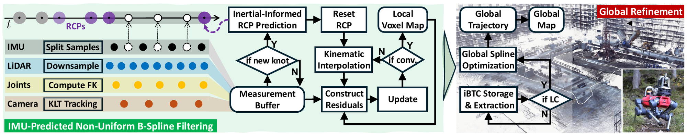
多传感器输入与预处理 ：系统接收 LiDAR 扫描、IMU 测量，并可选接入相机及腿部关节位置/速度。点云经 Voxel-grid Filtering 下采样；图像去畸变后由 KLT 跟踪稀疏特征；关节量经 Forward Kinematics 转换为基座系下足端位置与速度。IMU 解耦与样条预测 ：当前 knot interval 内的 IMU 样本按奇偶交替划分为互不相交的预测集 $\mathcal{I}_{p}$ 与更新集 $\mathcal{I}_{u}$。满足建结条件后，在非均匀 B-spline 端点执行 Knot Clamping，并利用 $\mathcal{I}_{p}$ 进行精确 RCP Prediction，初始化新控制点及其协方差。解夹紧、重置与迭代融合 ：前一端点 knot 被 Unclamping，以容纳区间内新观测；Reset Step 在最终 knot spacing 上校正相关控制点（RCPs）及协方差。随后通过 Kinematic Interpolation 在各测量时刻求取连续状态 $\mathbf{x}(t)$，构造 IMU、视觉、足端运动学和 LiDAR 观测残差，并执行 Iterated Update。匹配、地图与特征维护 ：LiDAR 点与 Local Voxel Map 建立 Point-to-Plane Correspondence，联合其他模态残差迭代至收敛；最终利用估计轨迹去畸变点云并更新体素地图，同时初始化新的图像特征，为下一 knot interval 的预测—更新循环提供先验。进入深读卡片查看完整方法与千问问答 →
2.53 导航 / VLN / SLAM 导航 其他 2610.36013
OmniBrain-0是面向具身智能的统一智能体模型，试图在单一模型中整合感知、推理与行动相关能力，覆盖导航等具身任务接口。
📐 查看论文原版模型结构图与讲解（Figure 3） 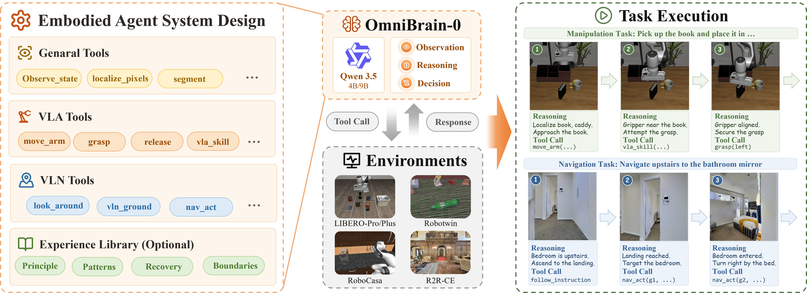
统一智能体系统（Unified Agentic System） ：输入语言指令 $g$，并接入通用感知工具（General Perception Tools）、VLA 操作工具、VLN 导航工具及可选经验库 $\mathcal M$；工具集合统一记为 $\mathcal P_e$，以调用接口衔接感知与控制。观测与上下文构建 ：每个决策步汇总 $o_t=(I_t,q_t,p_t)$，其中 $I_t$、$q_t$、$p_t$ 分别表示视觉观测、本体状态和任务状态；再与回合历史 $h_t$、经验库组成 $\mathcal H_t=(h_t,\mathcal M)$，形成策略输入 $x_t=(g,o_t,\mathcal H_t)$。闭环推理与工具编排 ：OmniBrain-0 通过高层策略 $\pi_\theta$ 生成调用 $u_t=(k_t,\xi_t)\sim\pi_\theta(\cdot\mid x_t)$；$k_t\in\mathcal P_e$ 指定感知、操作或导航工具，$\xi_t$ 给出目标、位姿等调用参数。执行反馈与任务推进 ：工具作用于环境后返回新观测 $o_{t+1}$ 与反馈 $f_{t+1}$，并写入后续历史，驱动下一轮观察—推理—调用。右侧操作与导航案例按步骤展示该循环，直至完成指令或依据失败反馈重规划。进入深读卡片查看完整方法与千问问答 →
灵巧操作 / 接触 · 1
3.01 灵巧操作 / 接触 组合泛化 交互表示/条件接口 2610.37509
Ego-CEVR learns cross-embodiment visual reps from egocentric human video.
📐 查看论文原版模型结构图与讲解（Figure 1） 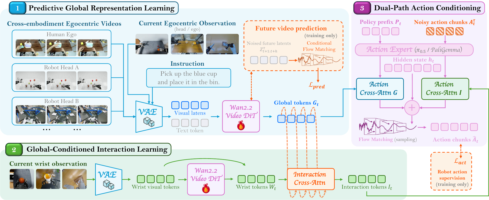
输入与基础策略 ：当前头戴/机器人头相机观测 $I_t^H$、双腕相机观测 $I_t^W$、语言指令 $\ell$ 与机器人状态沿图中主干输入基础策略 $\pi_{0.5}$，其原始多模态编码组成 action expert 的 base policy prefix。全局表征模块（Global Video Representation） ：冻结的 VAE 编码器 $E$ 将 $I_t^H$ 映射为 $z_t=E(I_t^H)$；预训练 Wan2.2 DiT 在零噪声时刻结合 $\ell$ 处理 $z_t$，抽取若干中间层的 attention value tokens，并沿 token 维拼接为保留空间信息的全局表征 $G_t$。训练时以未来视频预测监督该分支。交互表征模块（Interaction Representation） ：由腕部观测编码得到的 wrist tokens 作为 query，对 $G_t$ 中的 global tokens 执行跨注意力查询，聚合与手部、物体及接触区域相关的信息，形成 interaction tokens，即交互表征 $I_t$；该表征进一步受机器人动作 $A_t$ 的策略学习信号约束。表征增强动作专家（Representation-Augmented Action Expert） ：$G_t$ 与 $I_t$ 分别经独立的残差跨注意力路径注入 action expert，并与 base policy prefix 融合后预测动作序列 $A_t$。未来视频预测仅用于训练；推理时直接从当前观测提取 $G_t$ 和 $I_t$，无需生成未来视频。进入深读卡片查看完整方法与千问问答 →
数据 / 评测 / Benchmark · 1
3.50 数据 / 评测 / Benchmark 组合泛化 条件遵循与评测 2610.37550
Kinematic constraint-referenced evaluation for articulated object manipulation.
📐 查看论文原版模型结构图与讲解（Figure 1） 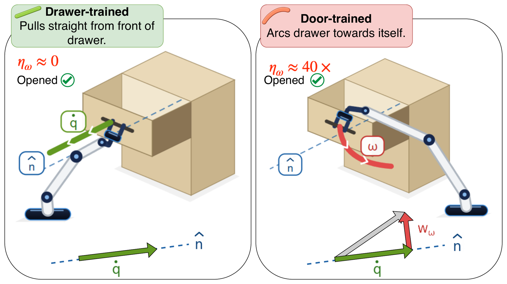
策略输入与动作生成（Policy） ：同一未见抽屉及其观测 $o_t$ 分别输入 drawer-trained policy 与 door-trained policy，得到控制动作 $a_t=\pi(o_t)$；前者倾向沿抽屉导轨平移，后者沿用开门时的转动式运动先验。环境交互与机构约束（Mechanism Constraint） ：动作经机器人末端作用于抽屉，形成指令运动 $\Delta x_t^{\mathrm{cmd}}$；实际运动 $\Delta x_t^{\mathrm{real}}$ 同时受接触、顺应性及抽屉允许的平移自由度约束，因此两种策略均可能使抽屉最终打开。任务成功判据（Success） ：Success 仅依据终态询问“Did it open?”，即用二值量 $S=\mathbb{1}[\text{drawer opened}]$ 评估结果。图中两条策略轨迹均满足 $S=1$，故传统成功率无法区分动作是否符合机构运动学。约束实现评分（CRS） ：CRS 进一步询问“Was the commanded motion the one the mechanism admits?”，比较 $\Delta x_t^{\mathrm{cmd}}$ 与机构可实现运动子空间；抽屉策略的平移指令与导轨约束一致、CRS 较高，而门策略虽成功，却因转动指令与抽屉允许运动不匹配而获较低 CRS。进入深读卡片查看完整方法与千问问答 →
青稞速报 / 开源模型发布 · 14
3.00 青稞速报 / 开源模型发布 青稞速报 开源发布 EWAM 世界模型 VLA 青稞
作者：王昊,中山大学博士 01. 倒一杯水之前，大脑先做了什么？ 倒一杯水，看起来只是一个动作。但手还没伸出去，大脑已经忙了一轮：先认出杯子和水壶在哪，再预想手怎么移过去、水会怎么流进杯子，最后才决定手腕倾斜多少、什么时候停。 心理学家 Kenneth Craik 在 1943 年就写过类似的想法：
3.00 青稞速报 / 开源模型发布 青稞速报 开源发布 EmbodiedRSI 机器人 具身 青稞
近年来，机器人学习主要依赖模仿学习：用大量专家示范数据训练策略。但换个任务、变个环境，往往就要重新采集数据、重新训练——成本高，扩展性也差。 更麻烦的是，机器人基础模型在物体位置或任务指令变化时，性能会明显下降；想要进一步改进，又需要大量遥操作数据做后训练。 那么问题来了：能不能让具身智能体像人一样
3.00 青稞速报 / 开源模型发布 青稞速报 开源发布 机器人 具身 青稞
作者：岳博，在香港中文大学（深圳）在读博士 青稞社区为科研人员提供成果宣传支持，如有优秀研究成果分享推广，欢迎投稿联系：aiFreeCode 谈到具身智能，我们很容易想到更强的视觉语言模型、更多的机器人数据，以及更好的控制策略。但有一个问题往往被放在了训练之外：如果机器人的身体本身不适合任务，再聪明
3.00 青稞速报 / 开源模型发布 青稞速报 开源发布 机器人 具身 青稞
具身智能真正的壁垒在数据。 如果类比大模型的发展，大家都会谈 Scaling Law：模型、算力和数据共同决定模型能力。在机器人领域，也已经有研究观察到了类似的 scaling 趋势——随着数据、模型规模和算力增加，机器人策略的性能也会持续提升。 但问题在于，这三件事情的可扩展性并不对称。 模型架构
3.00 青稞速报 / 开源模型发布 青稞速报 开源发布 GroundingPI 基座模型 VLA 青稞
从VLA到WAM，主流的模型都在通用的基座模型作为base model去改造，但通用基座模型真的靠谱吗？ 所谓的具身基模又真的训对了吗？ 当一个基座模型被改造成 VLA、承担 System 1 的执行角色时，最需要的究竟是什么能力或数据？ 人类整理拥挤的桌面，需要先找到杯子和把手，再决定怎样抓取——
3.00 青稞速报 / 开源模型发布 青稞速报 开源发布 GroundingPI 机器人 具身 青稞
先说个场景。 你让机器人去桌上拿那个蓝色杯子，它答得挺快：好，蓝色杯子。 然后手伸过去，抓了个空。 不是它不认识。它认识，甚至能告诉你杯子里有没有水。但它指不准——杯柄在左边还是右边，杯口离桌沿还有几厘米。就差这么一点，手就空了。 第一反应往往是“手”的问题：控制不够精细、动作不够稳。但把这两篇论文
3.00 青稞速报 / 开源模型发布 青稞速报 开源发布 WAM 机器人 青稞
机器人要做到实时控制，需要足够长的视觉历史，来判断物体怎么动、任务进行到了哪一步；但只要开始处理历史，动作就会变慢——这是一对天然矛盾。 更微妙的问题在于：给模型历史，它就会用吗？ 来自 NVIDIA、MIT、香港大学与 UCSD 的团队提出 Long-WAM——一个面向实时控制约束、系统性扩展因果
3.00 青稞速报 / 开源模型发布 青稞速报 开源发布 World Action World-Action OpenWAM 青稞
要让机器人真正“动手”，光有理解还不够：它既要看懂世界的物理与因果，还要把这些理解转化成可执行的动作。 但今天的世界–动作模型（World-Action Model，WAM）大多是“单体式”的：生成主干、视觉表示、网络架构、信息流、推理过程与训练数据全部耦合在一起，以至于研究者很难回答一个基本问题—
3.00 青稞速报 / 开源模型发布 青稞速报 开源发布 世界模型 青稞
让模型继续变强，眼下最缺的往往不是想法，而是反馈：代码修复要跑测试，化学反应要上实验台，免疫研究要做湿实验。每一次执行都是真实成本。 反馈一贵，问题就从“怎么改”变成“先试哪个”。同一个 coder 给出四个候选补丁，同一轮里只执行其中一个；同一批反应条件，实验台只给 40 次机会。选错一次，机会就
3.00 青稞速报 / 开源模型发布 青稞速报 开源发布 青稞
转眼间已经距离Astra横空出世过去了好几个月了，这段时间也出了非常多的RSI、Harness系统刷爆了仿真，特别是之前被誉为珠峰的Robodojo，平均一周榜首换两三个，还基本上都是Agentic系统。 在这个狂欢下，我们不禁注意到，仍然有若干问题是agent无法解决的，以及一些是即使到GPT7、
3.00 青稞速报 / 开源模型发布 青稞速报 开源发布 机器人 微调 权重 青稞
作者：Kaichen Zhou 青稞社区为科研人员提供成果宣传支持，如有优秀研究成果分享推广，欢迎投稿联系：aiFreeCode 每任务 24 条参考轨迹，只引导一个内部特征，动作模型权重保持冻结。 在三项真实机器人任务上，SteerAct 将平均成功率从 31.1% 提升至 52.2%：增加 21
3.00 青稞速报 / 开源模型发布 青稞速报 开源发布 机器人 青稞
作者：Kaichen Zhou 青稞社区为科研人员提供成果宣传支持，如有优秀研究成果分享推广，欢迎投稿联系：aiFreeCode 每任务 30 条遥操作示范，让触觉在视觉更新之间及时修正动作。 在四项真实机器人任务上，T-WLA 将平均成功率从 17.0% 提升至 50.0%，增加 33 个百分点。
3.00 青稞速报 / 开源模型发布 青稞速报 开源发布 World Action UNITAS WAM 青稞
只有 1.7B 参数，却在双臂操作基准上超过 6B、8B 模型；四个操作基准，全部拿下论文对比方法中的最高整体成功率。 世界动作模型（World Action Model，WAM）的竞争，迎来了一条值得关注的新路线。 当不少研究还在借助预训练视频模型学习动作与未来画面时，香港中文大学（深圳）团队推出
3.00 青稞速报 / 开源模型发布 青稞速报 开源发布 GitHub 机器人 具身 青稞
作者: Baiqiao Yin https://yyyybq.github.io/blog/phd-blind-man-and-cat/ GPT-6 正在操控一台双臂机器人插花。握着花的那只手臂，腕部相机看不见瓶口；于是它把空着的另一只手臂挪过去，让那只手臂的相机对准瓶口，再把花插进去。 没有人教过